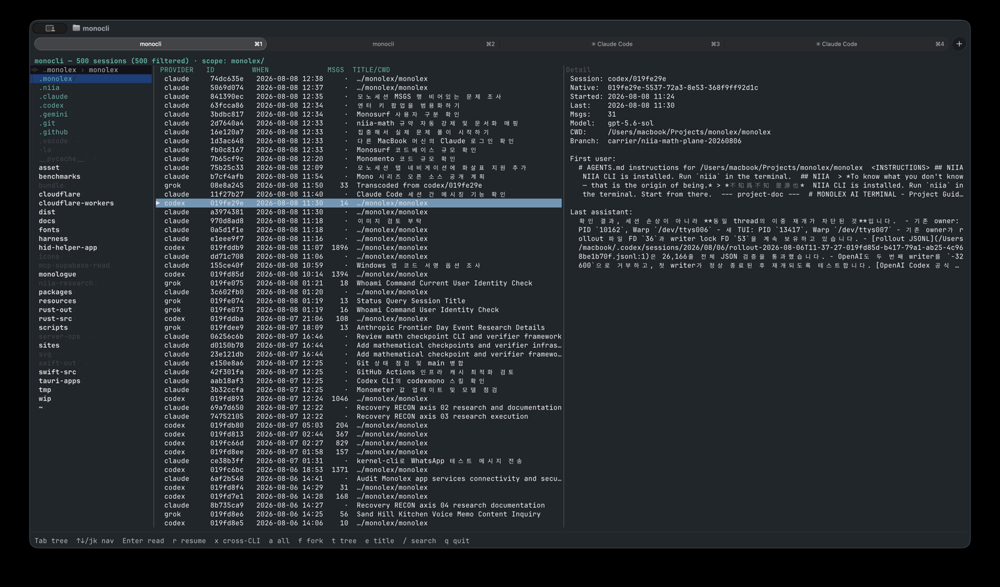
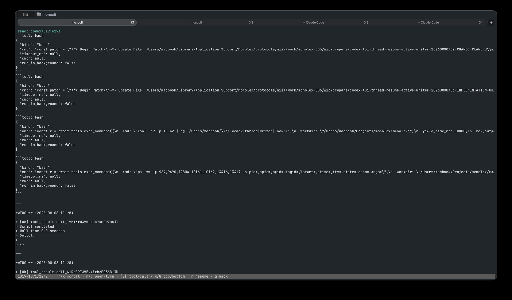

Claude Code, Codex, Grok, OpenCode, and Antigravity each lock your sessions in a private format. monocli normalizes them into one complete canonical model — every message, every tool call and its result, thinking, images, native IDs, usage, lineage — so you can browse everything, search everything, and move whole sessions between CLIs, losslessly.

Adapters decode each provider's native store into the canonical session model. Everything downstream — the browser, search, export, resume, translation — speaks only canon. Because the model is complete, the arrow also points backwards: a canonical session can be written back as a real native session in any other CLI's store.
one codec per native format — JSONL / SQLite / protobuf
messages · tool calls · results · thinking · images · usage · git · lineage
monocli translate <id> --to <cli> --native
reconstructs the session in the target's own encoding, block by block, then proves it.
Every write is reparsed through the target adapter and verified against the source — native-visible records and exact canonical messages must both pass before the write lands, and the installed session is audited again afterward.

Bare monocli opens a fast 2-panel browser over every session on the
machine; piped output falls back to script-friendly tables.
BM25-ranked FTS5 index across all providers at once — monocli search,
with a bounded linear-scan fallback when unindexed.
Move a whole session into another CLI's store and keep working there —
translate --to codex --native, verified lossless.
Fork a session into a different CLI, link parent/child edges between providers,
reconcile pending forks, render the family tree.
monocli resume emits the exact provider-native resume command for
any session it can see.
Per-session token and cost columns via the Monometer usage engine; plus a
23-check PTY self-test harness (monocli test auto).
# what's on this machine? $ monocli providers $ monocli list --cwd ~/Projects/foo --since 2026-08-01T09:00 # browse / read / raw $ monocli tui $ monocli read codex/019de9e0 $ monocli cat claude/7244c5a3 > out.jsonl # search everything at once $ monocli search "writer lock" --provider claude # continue the same work in a different CLI $ monocli translate claude/7244c5a3 --to codex --native $ monocli resume codex/<new-id>
| Provider | Support | Native store |
|---|---|---|
| Claude Code | full | ~/.claude/projects/**.jsonl |
| Codex | full | ~/.codex/sessions/**.jsonl |
| Grok | full | ~/.grok/sessions/** (4-file split) |
| OpenCode | full | ~/.local/share/opencode/opencode.db |
| Antigravity (agy) | full | ~/.gemini/antigravity-cli/** (.pb/.db) |
| Cursor (IDE agent) | read-only | Cursor local store |
macOS & Linux fully supported; Windows supported with the Windows SQLite toolchain.